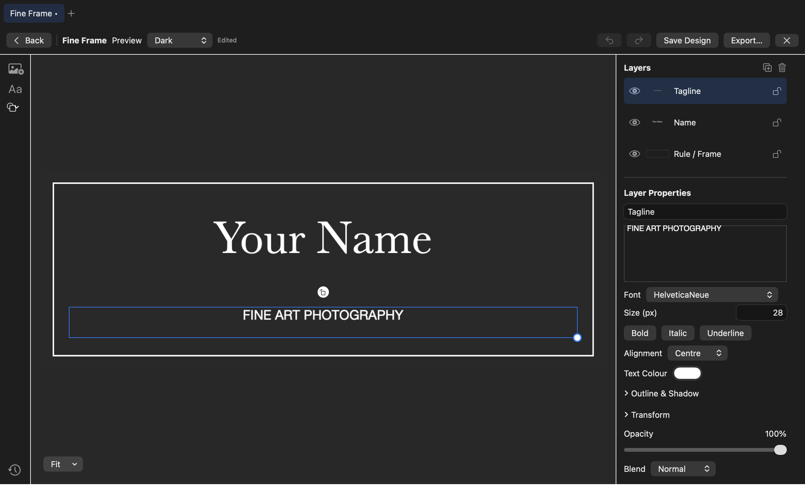
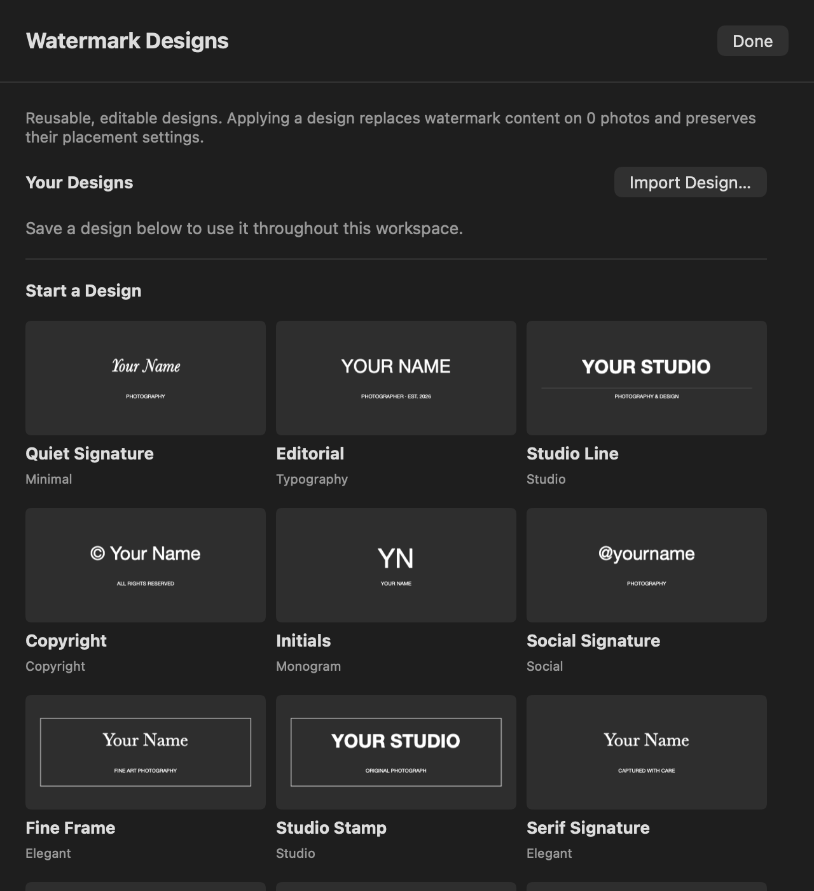
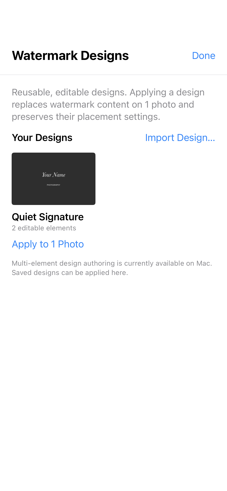
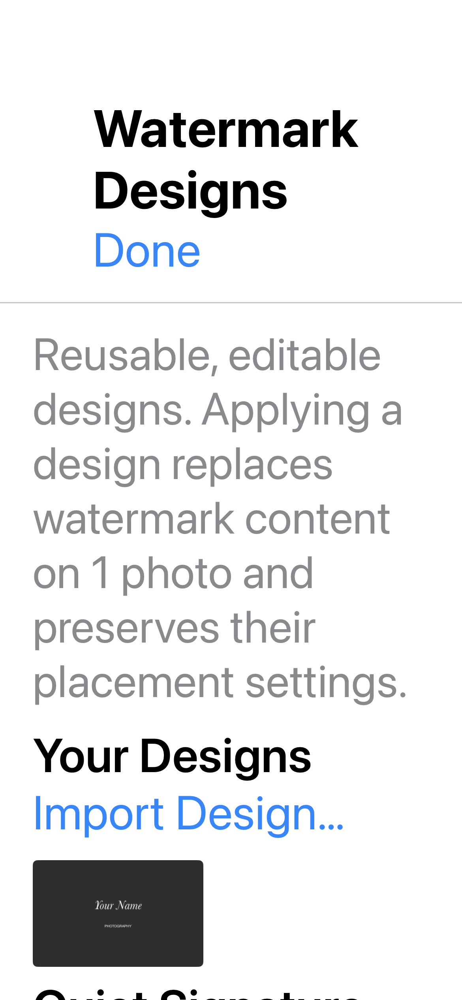
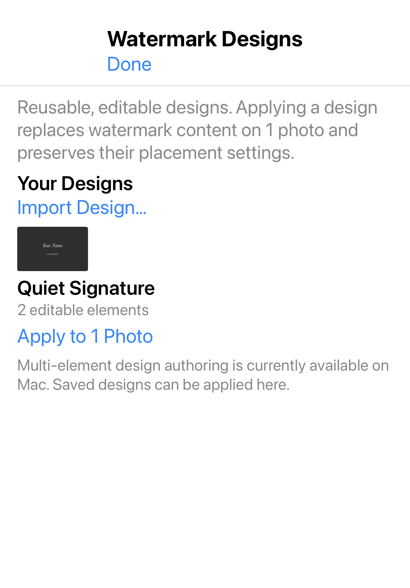

17 October 2026 · Implementation and verification for the approved first three phases. Existing work was preserved; no commit or push was made.
Legacy text/image watermarks and document version 1 remain supported. New designer metadata and text treatments require version 2 to prevent older editors silently dropping them. Internal Framepebble modules/storage/bundle identities are retained.
Watermark designs are ordinary editable documents. At application time, their content and resources are frozen, rendered once at the required stamp size and imported into managed source storage. The existing watermark configuration controls relative placement, rotation, tiling and opacity. Editing or deleting a library design never changes prior applied stamps. Saved designs own their logo resources independently of workspace cleanup. Target IDs and prior edits are captured before asynchronous work; changed, removed or relinked targets are skipped.
Tests cover saving/reopening, cancelled application, failed replacement, imported copies, resource ownership, saved-project cleanup protection, exact original bytes, grouped Undo/Redo, unrelated edits and explicit scope. Existing Core collision, alpha, opaque-mask and export validation tests also ran.
These are current app-hosted captures. They validate rendered layouts with programmatically populated state; they do not prove native pointer, touch, Pencil or VoiceOver behavior.





Testing used this Apple M5 Pro Mac and iOS 26.5 iPhone 17 Pro / iPad Pro 13-inch (M5) Simulators. Deployment targets remain macOS 15 and iOS/iPadOS 18. Simulator success does not establish physical-device performance or accessibility acceptance.
/tmp/ameluma-phases-core.log/tmp/ameluma-phases-mac.log/tmp/ameluma-phases-iphone.log/tmp/ameluma-phases-ipad.log/tmp/ameluma-phases-mac-release.log/tmp/ameluma-phases-release-tests.log/tmp/ameluma-phases-preflight.logThe 24-filter collection was not expanded. Recipes, Command-K and the remaining creation/export bridges are subsequent milestones, not claimed as delivered by these phases.